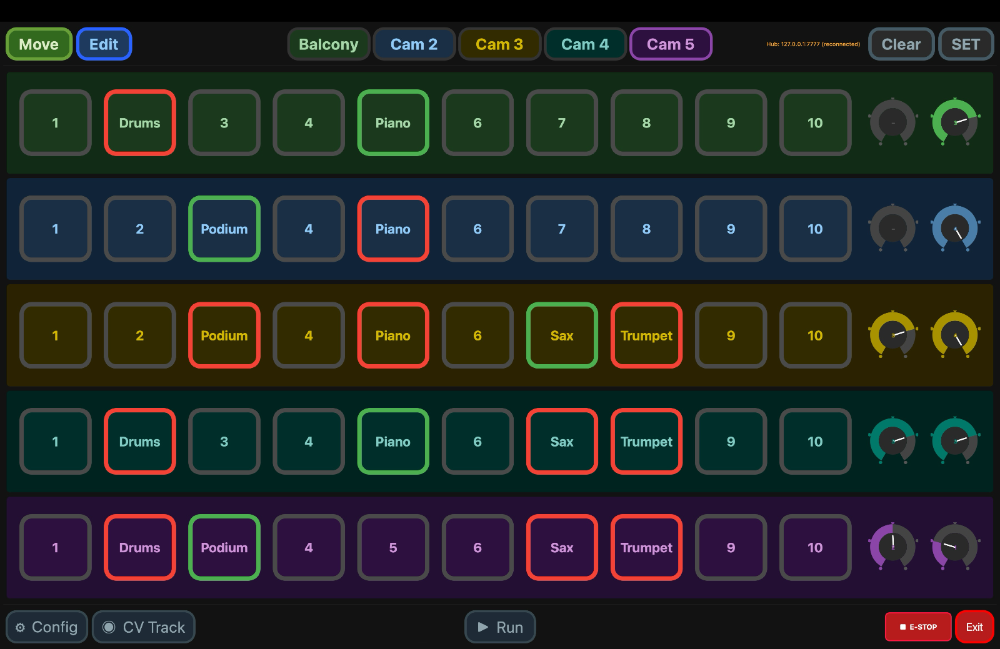

PC app
The full controller: joystick jogging, the position grid, look-at calibration, CV tracking and diagnostics.
The PC app is the most complete way to drive the rig. It's a PyQt6 application (Windows, macOS, Linux) that connects to the hub over WiFi or USB and gives you everything in one window.
Install & run
cd pc_app
python3 -m pip install -r requirements.txt
python3 main.pyPython 3.11+ is recommended. The requirements cover the core app plus CV tracking (OpenCV and the YOLO model). See CV tracking for the tracking-specific packages.
Connecting
Open Config → Hub Connection and pick one:
| Mode | When to use | Setting |
|---|---|---|
| WiFi TCP | Production — PC joined to the
CamMount WiFi | Hub IP 192.168.4.1, port
7777 |
| USB Serial | Bench / development — PC cabled to the hub | Pick the serial port |
192.168.4.1. Join the CamMount
network, then point the app there on port 7777.The main window
Once connected, the five cameras come alive as they report in. From here you can:
- Jog with a game controller or the on-screen controls — smooth expo curves make both fine and fast moves controllable. The joystick deadzone is adjustable in Config.
- Work the position grid — ten slots per camera with live borders. Store, recall and clear shots (Storing & recalling shots).
- Set the active speed presets with the on-screen dials.
- Run the look-at calibration wizard and moves (Look-at tracking).
- Open CV tracking — optical-flow or YOLO — while you ride the slider and zoom (CV tracking).
- Name cameras and positions (Camera & position names).
- Manage pairing in Config → Paired Mounts — view the hub's table, forget a mount, and resolve same-number conflicts (Pairing & identity).

Diagnostics & health
Every node in the system — Teensys, bridges, hub, console — reports heap, worst loop time, link failures and reset cause into the PC app's log every 10 seconds, with an extra report the moment something jumps. Slow leaks and radio degradation show up hours before they'd become a symptom. See Troubleshooting for reading them.
Built-in OSC server
The app runs its own OSC server (default UDP
9700), so Companion or QLab can drive the rig through the PC app —
handy when the PC is on the network anyway. It's toggleable in Config.
Develop with no hardware
You don't need a rig to run the app. Start the simulator and point the app at
127.0.0.1:
python3 tools/mount_sim.pyIt speaks the real protocol as a hub plus five mounts, with a fault-injection console. See Building the firmware.
Prefer a phone? See the Web app.